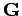
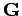
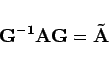
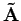
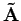

Inhalt Index DeskTop Bronstein

 Lineare Algebra Eigenwertaufgaben bei Matrizen Spezielles Eigenwertproblem Reelle symmetrische Matrizen, Ähnlichkeitstransformationen
Lineare Algebra Eigenwertaufgaben bei Matrizen Spezielles Eigenwertproblem Reelle symmetrische Matrizen, Ähnlichkeitstransformationen


Zu jeder reellen symmetrischen Matrix  gibt es eine orthogonale Matrix
gibt es eine orthogonale Matrix  und eine Diagonalmatrix
und eine Diagonalmatrix  mit
mit
Dabei sind die Diagonalelemente von  die Eigenwerte von
die Eigenwerte von  , und die Spalten von
, und die Spalten von  sind die dazugehörigen normierten Eigenvektoren. Aus der Gleichung (4.128) folgt unmittelbar
sind die dazugehörigen normierten Eigenvektoren. Aus der Gleichung (4.128) folgt unmittelbar
Man bezeichnet diese Gleichung als Hauptachsentransformation. Auf diese Weise wird  in die Diagonalform überführt.
in die Diagonalform überführt.
Wird die quadratische, nicht notwendig symmetrische Matrix  mit Hilfe der regulären quadratischen Matrix  nach der Vorschrift
mit Hilfe der regulären quadratischen Matrix  nach der Vorschrift
|  | (4.130) |
transformiert, dann spricht man von einer Ähnlichkeitstransformation. Die Matrizen  und  heißen ähnlich, und es gilt:
und  heißen ähnlich, und es gilt: